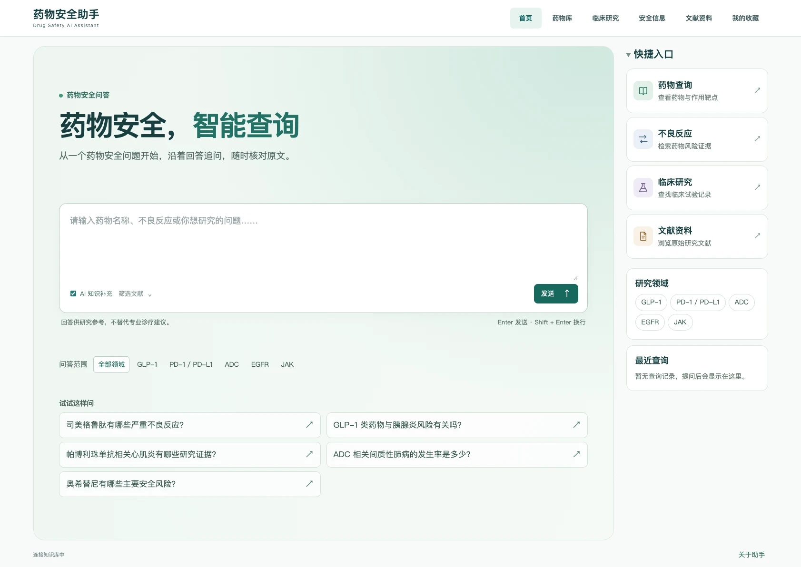

OVERVIEW
从真实问题出发。
以药物安全 AI 问答为首页，基于公开文献和美国药品说明书生成带引用的回答。可连续追问，按需打开药物档案、临床试验、安全信息和文献资料，并把回答与来源存入收藏。
38篇开放文献
2份说明书节选
770个检索片段
公开版采用 BM25 与中英文别名检索。说明书内容按美国标签列示，相关资料供研究核查。
PRODUCT DESIGN
把复杂留在背后。
药物安全信息分散在研究文献中，需要把回答与可核查的证据连接起来。
- ↗文献证据检索
- ↗引用与页码溯源
- ↗结构化回答
PROCESS
连接每一步。
- 文献解析与质控
- 章节感知切片
- BM25 与别名检索
- 循证生成
- 引用溯源
查看技术与版本说明 ＋
公开版采用 BM25 与中英文别名检索。说明书内容按美国标签列示，相关资料供研究核查。
相关技术：RAG · DeepSeek · Cloudflare Workers。流程图为项目组织方式的概括，具体实现与运行要求以项目文档为准。
RESULTS & SCOPE
让结果可查看。
公开版支持文献页码与官方说明书溯源，可收藏片段并导出研究报告草稿。
体验产品